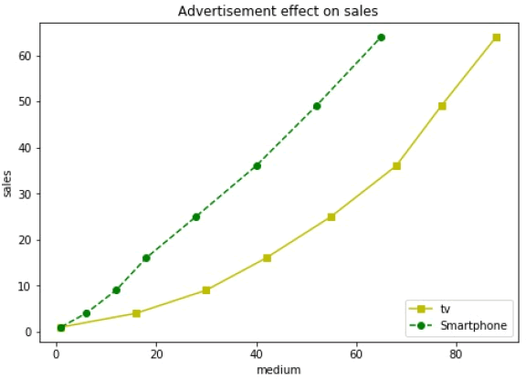

首页 > Matplotlib
Matplotlib axes类使用详解
Matplotlib 定义了一个 axes 类（轴域类），该类的对象被称为 axes 对象（即轴域对象），它指定了一个有数值范围限制的绘图区域。在一个给定的画布（figure）中可以包含多个 axes 对象，但是同一个 axes 对象只能在一个画布中使用。
rect 是位置参数，接受一个由 4 个元素组成的浮点数列表，形如 [left, bottom, width, height] ，它表示添加到画布中的矩形区域的左下角坐标(x, y)，以及宽度和高度。如下所示：
下面介绍 axes 类的其他成员函数，这些函数在绘图过程中都承担着不同的作用。
下面是 loc 参数的表示方法，分为字符串和整数两种，如下所示：
颜色代码如下表：
标记符号如下表：
线型表示字符，如下表：
下面的例子，以直线图的形式展示了电视、智能手机广告费与其所带来产品销量的关系图。其中描述电视的是带有黄色和方形标记的实线，而代表智能手机的则是绿色和圆形标记的虚线。
2D 绘图区域（axes）包含两个轴（axis）对象；如果是 3D 绘图区域，则包含三个。
通过调用 add_axes() 方法能够将 axes 对象添加到画布中，该方法用来生成一个 axes 轴域对象，对象的位置由参数rect决定。rect 是位置参数，接受一个由 4 个元素组成的浮点数列表，形如 [left, bottom, width, height] ，它表示添加到画布中的矩形区域的左下角坐标(x, y)，以及宽度和高度。如下所示：
ax=fig.add_axes([0.1,0.1,0.8,0.8])
注意：每个元素的值是画布宽度和高度的分数。即将画布的宽、高作为 1 个单位。比如，[ 0.1, 0.1, 0.8, 0.8]，它代表着从画布 10% 的位置开始绘制, 宽高是画布的 80%。下面介绍 axes 类的其他成员函数，这些函数在绘图过程中都承担着不同的作用。
legend()绘制图例
axes 类的 legend() 方法负责绘制画布中的图例，它需要三个参数，如下所示：ax.legend(handles, labels, loc)
- labels 是一个字符串序列，用来指定标签的名称；
- loc 是指定图例位置的参数，其参数值可以用字符串或整数来表示；
- handles 参数，它也是一个序列，它包含了所有线型的实例；
下面是 loc 参数的表示方法，分为字符串和整数两种，如下所示：
| 位置 | 字符串表示 | 整数数字表示 |
|---|---|---|
| 自适应 | Best | 0 |
| 右上方 | upper right | 1 |
| 左上方 | upper left | 2 |
| 左下 | lower left | 3 |
| 右下 | lower right | 4 |
| 右侧 | right | 5 |
| 居中靠左 | center left | 6 |
| 居中靠右 | center right | 7 |
| 底部居中 | lower center | 8 |
| 上部居中 | upper center | 9 |
| 中部 | center | 10 |
axes.plot()
这是 axes 类的基本方法，它将一个数组的值与另一个数组的值绘制成线或标记，plot() 方法具有可选格式的字符串参数，用来指定线型、标记颜色、样式以及大小。颜色代码如下表：
| 'b' | 蓝色 |
| 'g' | 绿色 |
| 'r' | 红色 |
| 'c' | 青色 |
| 'm' | 品红色 |
| 'y' | 黄色 |
| 'k' | 黑色 |
| 'w' | 白色 |
标记符号如下表：
| 标记符号 | 描述 |
| '.' | 点标记 |
| 'o' | 圆圈标记 |
| 'x' | 'X'标记 |
| 'D' | 钻石标记 |
| 'H' | 六角标记 |
| 's' | 正方形标记 |
| '+' | 加号标记 |
线型表示字符，如下表：
| 字符 | 描述 |
| '-' | 实线 |
| '--' | 虚线 |
| '-.' | 点划线 |
| ':' | 虚线 |
| 'H' | 六角标记 |
下面的例子，以直线图的形式展示了电视、智能手机广告费与其所带来产品销量的关系图。其中描述电视的是带有黄色和方形标记的实线，而代表智能手机的则是绿色和圆形标记的虚线。
import matplotlib.pyplot as plt
y = [1, 4, 9, 16, 25,36,49, 64]
x1 = [1, 16, 30, 42,55, 68, 77,88]
x2 = [1,6,12,18,28, 40, 52, 65]
fig = plt.figure()
ax = fig.add_axes([0,0,1,1])
#使用简写的形式color/标记符/线型
l1 = ax.plot(x1,y,'ys-')
l2 = ax.plot(x2,y,'go--')
ax.legend(labels = ('tv', 'Smartphone'), loc = 'lower right') # legend placed at lower right
ax.set_title("Advertisement effect on sales")
ax.set_xlabel('medium')
ax.set_ylabel('sales')
plt.show()
输出结果如下：

图1：输出结果
图1：输出结果
关注公众号「站长严长生」，在手机上阅读所有教程，随时随地都能学习。内含一款搜索神器，免费下载全网书籍和视频。

微信扫码关注公众号